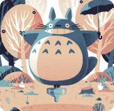

"Le vent se lève, il faut tenter de vivre"
“Le vent se lève” est un des derniers films d’animation produit par Hayao Miyazaki. Il est sorti en 2013, son nom est tiré d’un célèbre poème de Paul Valéry “Le vent se lève, il faut tenter de vivre”.
Le film rend hommage à un ingénieur en aéronautique Jiro Horikoshi.
Il a conçu les bombardiers Mitsubishi A6M et A5M, aussi appelés le chasseur Zero et Claude dans le long métrage
Synopsis du film
Le film commence quand Jirô est enfant. Il veut devenir pilote mais étant moype il ne le pourra jamais. Il se concentre alors sur l’aéronautique toute sa vie.
Plusieurs évènements ont lieu pendant sa vie et sont retranscrits dans le film. Par exemple le tremblement de terre de Tokyo en 1923 puis le manque d’eau potable. Il y a eu la reconstruction de Tokyo pendant ses études et la crise économique Shōwa qui survient avec la faillite des banques.
Peu de temps avant le tremblement de Terre, il voyage en train et il fait la connaissance d’une jeune fille, Nahoko.
Cette scène est mémorable car c’est la première où est cité le titre du film et la fin du vers : “Le vent se lève, il faut tenter de vivre”.
Ce vers donne espoir et encourage les personnes à réaliser leurs rêves, notamment celui de Jirô qui tourne autour de l’aviation.
Tout au long du film, il y a des passages oniriques où il rencontre le célèbre comte Caproni. Un ingénieur en aéronautique avec qui il partage son rêve, il s'échangent alors des conseils qui aideront Jirô à progresser.
On remarque un coup de foudre et une cohésion entre Nahoko et Jirô lors du voyage. Jirô revient pour aider la jeune fille à rentrer chez elle après le tremblement de terre.
Quelques années plus tard, ils se reverront lorsque Jirô voyagera en Europe. Il voyage pour étudier des avions allemands afin d'avancer les progrès sur l’aviation au Japon.
Malheureusement Nahoko est malade de la tuberculose comme sa mère. Ils décident de se marier rapidement après l’avoir appris.
Pourquoi avoir choisi ce film?
Sur la fin du film on remarque que Nahoko restera en arrière plan tout au long de la vie de Jirô. Bien qu’elle soit malade, il reste très concentré sur son travail jusqu’à réussir à concevoir son avion.
Sa femme meurt pendant les tests de vitesse du bombardier, qui seront un succès. Il la retrouve dans un de ses rêves où ils se diront au revoir. À ce moment elle cite le célèbre vers de Paul Valéry, on comprend que Jirô a réalisé son rêve et doit commencer à vivre pour lui.
Personnellement j’aime beaucoup ce film car il est émouvant, très intéressant au niveau de l’aviation et sur l’époque.
L’histoire d’amour est très touchante mais je trouve Jirô égoïste d’avoir laissé sa femme vivre avec lui alors qu’elle avait besoin de soins.
Même si elle l’aime beaucoup et lui demande de vivre (par le vers du poème). Maintenant qu’il a réalisé son rêve il ne pourra même pas profiter d’une vie de famille puisque sa femme n’est plus à ses côtés. Il y a un gros suspense sur la fin du film et sur ce que Jirô va faire après la guerre.

À voir aussi
-

Filmographie
Venez découvrir les films d’animation réalisés par Hayao Miyazaki.
en lire plus
-

Cartographie d'un univers
En savoir plus sur l'univers des films Ghibli ? C'est possible et il est plus accessible que vous ne le croyez !
en lire plus>